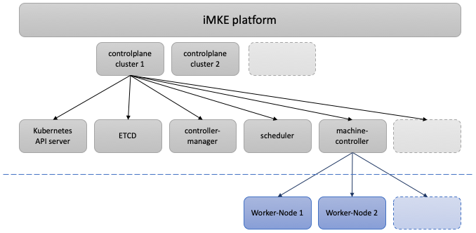

Was ist die iMKE-Plattform?
Die iMKE-Plattform stellt Managed Kubernetes Cluster bereit. Als Kunde können Sie mit einem einfachen Klick in unserem Webinterface Kubernetes-Cluster erstellen, aktualisieren oder auch wieder löschen.
Was ist ein “Managed Kubernetes Cluster”?
Kubernetes Cluster bieten eine verfügbare und skalierbare Umgebung für containerisierte Anwendungen.
Bei einem gemanagten Kubernetes Cluster auf unserer iMKE-Plattform:
- Kümmern wir uns um die zugrundeliegende Server-Infrastruktur und die Kubernetes-Installation.
- Stellen wir die Skalierbarkeit ihres Clusters sicher und geben Ihnen die Möglichkeit, die Anzahl und Größe Ihrer Worker-Nodes nach Ihren Bedürfnissen frei zu konfigurieren.
- Übernehmen wir das Management und den Betrieb der Kubernetes-Controlplane.
Während wir uns um den stabilen Betrieb Ihres Clusters kümmern, haben Sie trotzdem den Vollzugriff auf das Cluster via einer kubeconfig-Datei. Sie haben die volle Kontrolle über alle Ihre Cluster:
- Sie können eine unbegrenzte Anzahl von Clustern über das iMKE-Webinterface verwalten, neue Cluster sind schnell erstellt.
- Die Kubernetes-Version bestehender Cluster können Sie mit einem einfachen Klick aktualisieren und so Ihre Cluster immer aktuell halten.
- Selbstverständlich können Sie nicht mehr benötigte Cluster auch mit einem einfachen Klick wieder löschen.
- Bei Bedarf können Sie auch vollen root-Zugriff auf Ihre Worker-Nodes bekommen (zum Beispiel wenn Sie Ihre selbstentwickelten Applikationen intensiv debuggen wollen).
Bei allen Problemen im Clusterbetrieb können Sie sich dabei jederzeit an unseren 24/7-Support wenden. Jenseits der Betriebsleistung der iMKE-Plattform bieten wir mit unserem Professional Service Team auch eine weitergehende Beratung an, helfen können wir beispielsweise bei Fragen zum allgemeinen Applikationsbetrieb auf Kubernetes oder auch spezifisch zum optimalen Anwendungs- und Softwaredesign für Ihr konkretes Vorhaben.
Wie kann ich ein “Managed Kubernetes Cluster” benutzen?
Selbstverständlich können Sie ein iMKE-Cluster so benutzen wie jedes andere Kubernetes-Cluster auch. Da es sich bei einem iMKE-Cluster um ein gemanagtes Kubernetes Cluster handelt, können Sie sich dabei voll und ganz auf den Applikationsbetrieb konzentrieren.
Beispielsweise können Sie ein iMKE-Cluster nutzen, um bereits paketierte, containerisierte Anwendungen via helm zu installieren:
- Beispielsweise eine vollständige WordPress-Installation,
- ein Drupal CMS,
- oder eine private nextcloud Filesharing-Umgebung.
Kubernetes ist dabei selbstverständlich nicht auf bereits fertig paketierte, vollständige Anwendungen beschränkt. Vielmehr ist Kubernetes die natürliche Umgebung, um Ihre eigenen, zeitgemäßen “cloud-native”-Anwendungen zu entwickeln und produktiv zu betreiben.
Als Entwicklungsumgebung könnten Sie beispielsweise die folgenden Anwendungen in einem Kubernetes-Cluster bereitstellen:
- Gitlab zur Verwaltung des Sourcecode,
- Jenkins zur Automatisierung Ihrer Entwicklungsworkflows,
- und Artifactory um Ihre Buildergebnisse versioniert abzulegen.
Weiterhin könnten Sie jeweils ein Entwicklungs-, Staging- und Produktions-Cluster in iMKE anlegen und Ihre Anwendungsarchitektur mit einfach zu installierenden, bereits via helm paketierten Komponenten unterstützen:
- Beispielsweise mit einem kompletten Kafka-Setup,
- einer PostgreSQL-, MySQL- oder MariaDB-Datenbank,
- oder auch einem kompletten Prometheus-Monitoring-Stack inkl. Prometheus, Alertmanager und Grafana.
Aber dies sind nur Beispiele. Für eine weitergehende Beratung fragen Sie am besten direkt unser Professional Services Team.
Wie funktioniert die iMKE-Plattform?
Die iMKE-Plattform selbst basiert ebenfalls auf Kubernetes. Intern läuft die Controlplane eines Kundenclusters in einem dedizierten Kubernetes Namespace, die einzelnen Komponenten der Controlplane sind dabei als Deployments bzw. Statefulsets gestartet:
- Kubernetes API server
- Etcd Datenbank
- controller-manager
- scheduler
- machine-controller
- …sowie andere Komponenten der Controlplane.
Die Controlplane selbst ebenfalls in Kubernetes zu betreiben hat dabei viele Vorteile: einzelne Pods werden automatisch über verschiedene Server verteilt (Scheduling), das gesamte Setup ist skalierbar und weitgehend selbstheilend, da abgestürzte Pods automatisch neugestartet werden.

Die Worker-Nodes eines Kundenclusters werden wiederum als selbstständige VMs im Openstack-Tenant des Kunden betrieben. Der machine-controller in der Controlplane kümmert sich dabei um die automatische Erstellung der VMs sowie ihre Eingliederung in das bestehende Cluster. Dabei können via Webinterface jederzeit neue Nodes ins Cluster hinzugefügt oder auch gelöscht werden. Komplexere Änderungen werden durch den machine-controller in einem “Rolling-Upgrade” durchgeführt - immer eine Worker-Node nach der anderen. So werden Downtimes während eines Upgrades minimiert.
Zertifizierungen

iMKE ist ein Produkt um effizient Kubernetes Cluster in der GEC Cloud zu betreiben. Kunden können über ein übersichtliches Webinterface mit nur ein paar Klicks komplett funktionale und von der Cloud Native Computing Foundation zertifizierte Cluster hochfahren und für Applikations-Deployments verwenden.
Conformance Ergebnisse für unsere Plattform können jederzeit unter CNCF Kubernetes Conformance eingesehen werden.